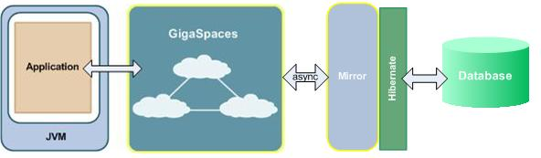
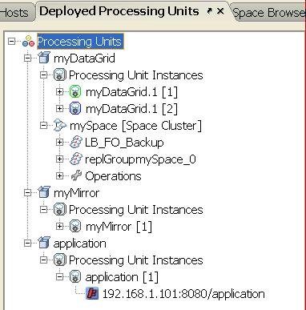
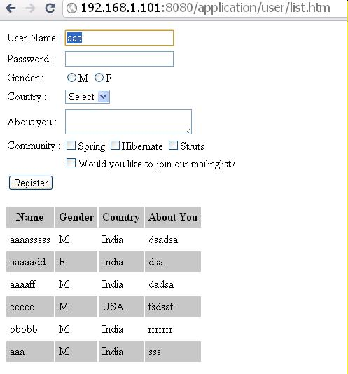
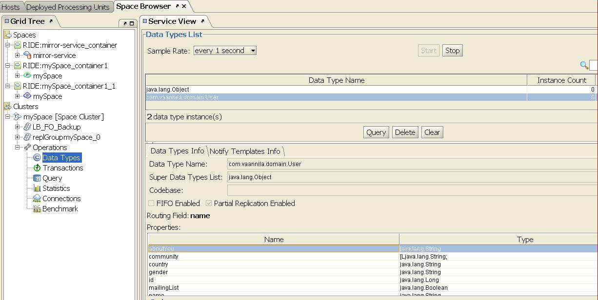
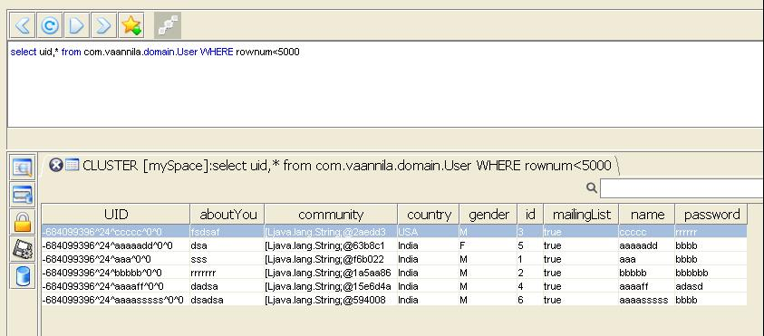
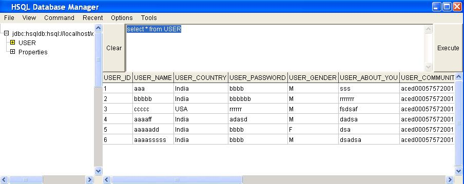

This use case isn't supported from release 12.x and up
| Author | Product Version | Reference | Download |
|---|---|---|---|
| Shay Hassidim | 8.0 | Hibernate example |
The following example is based on the standard Spring Hibernate Integration tutorial. In this pattern you will see how to modify an existing simple spring/hibernate application to leverage GigaSpaces as the in-memory Data-grid and the application server hosting both the web application and the data in-memory. The Hibernate persistency settings will still be leveraged by GigaSpaces Hibernate External Data Source storing the data in-memory into a database in an asynchronous manner.
Moving Spring/Hibernate application to GigaSpaces involves the following basic steps:
The procedure described below will move a standard Spring/Hibernate application that is using the following architecture:
To use the following architecture where the Data-Grid placed in-line between the application and the database:

The existing application Spring bean Configuration file will be modified to:
<?xml version="1.0" encoding="UTF-8"?>
<beans xmlns="http://www.springframework.org/schema/beans"
xmlns:xsi="http://www.w3.org/2001/XMLSchema-instance"
xmlns:p="http://www.springframework.org/schema/p"
xsi:schemaLocation="http://www.springframework.org/schema/beans http://www.springframework.org/schema/beans/spring-beans.xsd
<bean id="viewResolver" class="org.springframework.web.servlet.view.InternalResourceViewResolver"
p:prefix="/WEB-INF/jsp/" p:suffix=".jsp" />
<bean id="myDataSource" class="org.apache.commons.dbcp.BasicDataSource" destroy-method="close">
<property name="driverClassName" value="org.hsqldb.jdbcDriver"/>
<property name="url" value="jdbc:hsqldb:hsql://localhost/xdb"/>
<property name="username" value="sa"/>
<property name="password" value=""/>
</bean>
<bean id="mySessionFactory" class="org.springframework.orm.hibernateThe {myUserSpaceDAO}} includes the GigaSpaces DAO.
<?xml version="1.0" encoding="UTF-8"?>
<beans xmlns="http://www.springframework.org/schema/beans"
xmlns:xsi="http://www.w3.org/2001/XMLSchema-instance"
xmlns:os-core="http://www.openspaces.org/schema/core"
xmlns:p="http://www.springframework.org/schema/p"
xsi:schemaLocation="http://www.springframework.org/schema/beans http://www.springframework.org/schema/beans/spring-beans.xsd
http://www.openspaces.org/schema/core http://www.openspaces.org/schema/core/openspaces-core.xsd">
<bean id="viewResolver" class="org.springframework.web.servlet.view.InternalResourceViewResolver"
p:prefix="/WEB-INF/jsp/" p:suffix=".jsp" />
<bean name="/user/*.htm" class="com.vaannila.web.UserController" >
<property name="userDAO" ref="myUserSpaceDAO" />
</bean>
<os-core:space-proxy id="space" name="mySpace" />
<os-core:giga-space id="gigaSpace" space="space"/>
<bean id="myUserSpaceDAO" class="com.vaannila.dao.UserDAOSpaceImpl">
<property name="gigaspace" ref="gigaSpace"/>
</bean>
</beans>
<?xml version="1.0" encoding="UTF-8"?>
<beans xmlns="http://www.springframework.org/schema/beans"
xmlns:xsi="http://www.w3.org/2001/XMLSchema-instance"
xmlns:os-core="http://www.openspaces.org/schema/core"
xmlns:os-events="http://www.openspaces.org/schema/events"
xmlns:os-remoting="http://www.openspaces.org/schema/remoting"
xsi:schemaLocation="http://www.springframework.org/schema/beans http://www.springframework.org/schema/beans/spring-beans.xsd
http://www.openspaces.org/schema/core http://www.openspaces.org/schema/core/openspaces-core.xsd
http://www.openspaces.org/schema/events http://www.openspaces.org/schema/events/openspaces-events.xsd
http://www.openspaces.org/schema/remoting http://www.openspaces.org/schema/remoting/openspaces-remoting.xsd">
<!--
Spring property configurer which allows us to use system properties (such as user.name).
-->
<bean id="propertiesConfigurer" class="org.springframework.beans.factory.config.PropertyPlaceholderConfigurer"/>
<!--
Enables the usage of @GigaSpaceContext annotation based injection.
-->
<os-core:giga-space-context/>
<!--
A JDBC pooled data source that connects to the HSQL server the mirror starts.
-->
<bean id="dataSource" class="org.apache.commons.dbcp.BasicDataSource" destroy-method="close">
<property name="driverClassName" value="org.hsqldb.jdbcDriver"/>
<property name="url" value="jdbc:hsqldb:hsql://localhost/xdb"/>
<property name="username" value="sa"/>
<property name="password" value=""/>
</bean>
<!--
Hibernate SessionFactory bean. Uses the pooled data source to connect to the database.
-->
<bean id="sessionFactory" class="org.springframework.orm.hibernate<?xml version="1.0" encoding="UTF-8"?>
<beans xmlns="http://www.springframework.org/schema/beans"
xmlns:xsi="http://www.w3.org/2001/XMLSchema-instance"
xmlns:os-core="http://www.openspaces.org/schema/core"
xmlns:os-events="http://www.openspaces.org/schema/events"
xmlns:os-remoting="http://www.openspaces.org/schema/remoting"
xmlns:os-sla="http://www.openspaces.org/schema/sla"
xsi:schemaLocation="http://www.springframework.org/schema/beans http://www.springframework.org/schema/beans/spring-beans.xsd
http://www.openspaces.org/schema/core http://www.openspaces.org/schema/core/openspaces-core.xsd
http://www.openspaces.org/schema/events http://www.openspaces.org/schema/events/openspaces-events.xsd
http://www.openspaces.org/schema/remoting http://www.openspaces.org/schema/remoting/openspaces-remoting.xsd
http://www.openspaces.org/schema/sla http://www.openspaces.org/schema/sla/openspaces-sla.xsd">
<bean id="propertiesConfigurer" class="org.springframework.beans.factory.config.PropertyPlaceholderConfigurer">
</bean>
<!--
A JDBC datasource pool that connects to HSQL.
-->
<bean id="dataSource" class="org.apache.commons.dbcp.BasicDataSource" destroy-method="close" >
<property name="driverClassName" value="org.hsqldb.jdbcDriver"/>
<property name="url" value="jdbc:hsqldb:hsql://localhost/xdb"/>
<property name="username" value="sa"/>
<property name="password" value=""/>
</bean>
<!--
Hibernate SessionFactory bean. Uses the pooled data source to connect to the database.
-->
<bean id="sessionFactory" class="org.springframework.orm.hibernateThe POJO Class will be modified to include:
package com.vaannila.domain;
import javax.persistence.Column;
import javax.persistence.Entity;
import javax.persistence.GeneratedValue;
import javax.persistence.Id;
import javax.persistence.Table;
@Entity
@Table(name="USER")
public class User {
private Long id; private String name; private String password; private String gender;
private String country; private String aboutYou; private String[] community; private Boolean mailingList;
@Id
@GeneratedValue
@Column(name="USER_ID")
public Long getId() {return id;}
public void setId(Long id) {this.id = id;}
@Column(name="USER_NAME")
public String getName() {return name;}
public void setName(String name) {this.name = name;}
@Column(name="USER_PASSWORD")
public String getPassword() {return password;}
public void setPassword(String password) {this.password = password;}
@Column(name="USER_GENDER")
public String getGender() {return gender;}
public void setGender(String gender) {this.gender = gender; }
@Column(name="USER_COUNTRY")
public String getCountry() {return country;}
public void setCountry(String country) {this.country = country;}
@Column(name="USER_ABOUT_YOU")
public String getAboutYou() {return aboutYou;}
public void setAboutYou(String aboutYou) {this.aboutYou = aboutYou;}
@Column(name="USER_COMMUNITY")
public String[] getCommunity() {return community;}
public void setCommunity(String[] community) {this.community = community;}
@Column(name="USER_MAILING_LIST")
public Boolean getMailingList() {return mailingList;}
public void setMailingList(Boolean mailingList) {this.mailingList = mailingList;}
}
package com.vaannila.domain;
import javax.persistence.Column;
import javax.persistence.Entity;
import javax.persistence.GeneratedValue;
import javax.persistence.Id;
import javax.persistence.Table;
import com.gigaspaces.annotation.pojo.SpaceId;
import com.gigaspaces.annotation.pojo.SpaceRouting;
@Entity
@Table(name="USER")
public class User {
private Long id; private String name; private String password; private String gender; private String country;
private String aboutYou; private String[] community; private Boolean mailingList;
@Id
@GeneratedValue
@Column(name="USER_ID")
public Long getId() {return id;}
public void setId(Long id) {this.id = id;}
@Column(name="USER_NAME")
@SpaceId(autoGenerate=false) // <-- ADDED FOR GIGASPACES
@SpaceRouting // <-- ADDED FOR GIGASPACES
public String getName() {return name;}
public void setName(String name) {this.name = name; }
@Column(name="USER_PASSWORD")
public String getPassword() {return password; }
public void setPassword(String password) {this.password = password; }
@Column(name="USER_GENDER")
public String getGender() {return gender;}
public void setGender(String gender) {this.gender = gender; }
@Column(name="USER_COUNTRY")
public String getCountry() {return country; }
public void setCountry(String country) {this.country = country;}
@Column(name="USER_ABOUT_YOU")
public String getAboutYou() {return aboutYou;}
public void setAboutYou(String aboutYou) {this.aboutYou = aboutYou; }
@Column(name="USER_COMMUNITY")
public String[] getCommunity() {return community;}
public void setCommunity(String[] community) {this.community = community;}
@Column(name="USER_MAILING_LIST")
public Boolean getMailingList() {return mailingList;}
public void setMailingList(Boolean mailingList) {this.mailingList = mailingList; }
}
The UserDAO interface remains as is:
package com.vaannila.dao;
import java.util.List;
import com.vaannila.domain.User;
public interface UserDAO {
public void saveUser(User user) ;
public List<User> listUser() ;
}
The DAO implementation should be modified to use the GigaSpace interface to access the data grid instead of using the HibernateTemplate that is accessing the database. The GigaSpace interface similar methods to the HibernateTemplate to write and Query for objects.
package com.vaannila.dao;
import java.util.List;
import org.hibernate.SessionFactory;
import org.springframework.orm.hibernatepackage com.vaannila.dao;
import java.util.ArrayList;
import java.util.List;
import org.openspaces.core.GigaSpace;
import com.vaannila.domain.User;
public class UserDAOSpaceImpl implements UserDAO {
private GigaSpace gigaspace;
@Override
public void saveUser(User user) {
gigaspace.write(user);
}
@Override
@SuppressWarnings("unchecked")
public List<User> listUser() {
List<User> users = new ArrayList<User>();
User usersArry[] = gigaspace.readMultiple(new User(), Integer.MAX_VALUE);
for (User user : usersArry) {
users.add(user);
}
return users;
}
public GigaSpace getGigaspace() {return gigaspace;}
public void setGigaspace(GigaSpace gigaspace) {this.gigaspace = gigaspace;}
}
To deploy the Data Grid and the web Application into the GigaSpaces runtime environment perform the following:
On linux run the following command:
\java -cp ../lib/platform/jdbc/hsqldb.jar org.hsqldb.Server -database.0 file:mydb -dbname.0 xdb
Once the agent is up and running call the deploy commands.
gs.sh deploy myDataGrid.jar
You should see the following:
Found 1 GSMs
Deploying [myDataGrid.jar] with name [myDataGrid] under groups [gigaspaces-8.0.0-XAPPremium-ga] and locators []
Uploading [myDataGrid] to [http://192.168.1.101:3354/]
Waiting for [2] processing unit instances to be deployed...
[myDataGrid.1] [1] deployed successfully on [192.168.1.101]
[myDataGrid.1] [2] deployed successfully on [192.168.1.101]
Finished deploying [2] processing unit instances
gs.sh deploy myMirror.jar
You should see the following:
Found 1 GSMs
Deploying [myMirror.jar] with name [myMirror] under groups [gigaspaces-8.0.0-XAPPremium-ga] and locators []
Uploading [myMirror] to [http://192.168.1.101:3354/]
SLA Not Found in PU. Using Default SLA.
Waiting for [1] processing unit instances to be deployed...
[myMirror] [1] deployed successfully on [192.168.1.101]
Finished deploying [1] processing unit instances
gs.sh deploy application.war
You should see the following:
Found 1 GSMs
Deploying [application.war] with name [application] under groups [gigaspaces-8.0.0-XAPPremium-ga] and locators []
Uploading [application] to [http://192.168.1.101:3354/]
Waiting for [1] processing unit instances to be deployed...
[application] [1] deployed successfully on [192.168.1.101]
Finished deploying [1] processing unit instances
On linux run the following command:


Each registered user data will be stored within the Space and also be persist into the database.

This will display the Query view with the User objects data stored within the space:

java -cp ../lib/platform/jdbc/hsqldb.jar org.hsqldb.util.DatabaseManager
And query the database:

You may download the full source code of the application here.